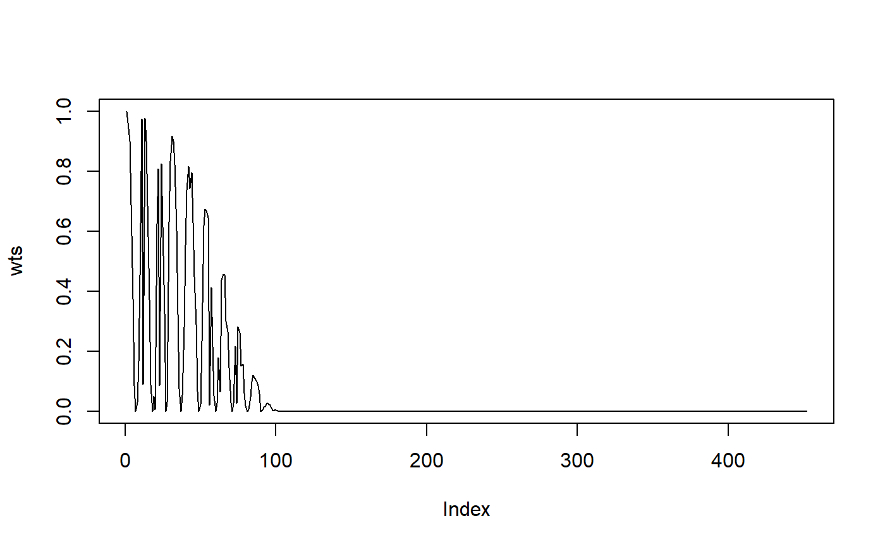

Get weights for WRTDS for a single observation using a tri-cubic weighting function
getwts(dat_in, ...) # S3 method for default getwts(dat_in, ref_in, wt_vars = c("day_num", "dec_time", "flo"), wins = list(0.5, 10, NULL), all = FALSE, slice = TRUE, ngrzero = FALSE, wins_only = FALSE, min_obs = 100, ...)
| dat_in | input tidal object |
|---|---|
| ... | arguments passed to or from other methods |
| ref_in | row of tidal object as reference for weights |
| wt_vars | chr string of three elements indicating names of columns in tidal object that are used for reference row weights |
| wins | list of half-window widths for time, year, and flow |
| all | logical to return individual weights rather than the product of all three, default |
| slice | logical indicating if data are subset by observations within the maximum window width for faster calculations |
| ngrzero | logical indicating if count of observations with weights greater than zero is returned |
| wins_only | logical if the half-window widths should be returned as a list |
| min_obs | numeric vector for window widening if the number of observations with non-zero weights is less than the specified value, use |
A vector of weights with length equal to the number of observations (rows) in the tidal object. Vectors for all three weighting variables are returned if all = TRUE.
The default half-window widths for day_num, year, and flow are half a day (12 hours), 10 years, and half the range of salinity/flow in the input data. The half-window widths are expanded by 10% until at least 100 observations have weights greater than zero. This behavior can be suppressed by setting min_obs = NULL.
## data(tidobj) # get weights for first row first <- tidobj[1, ] wts <- getwts(tidobj, first) plot(wts, type = 'l')